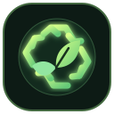

🍃
Wet / organic waste
Fruit peels and many food scraps may be compostable. Check local collection rules.

EcoSort AIGRADE 9 · ARTIFICIAL INTELLIGENCE PROJECT
Not sure which bin your waste belongs in? EcoSort AI is a student project prototype that helps you learn how to sort common waste items more responsibly.
01 / INTERACTIVE PROTOTYPE
Pick an everyday item to see a suggested category, a reason, and a practical disposal tip. Local recycling rules can differ.
DEMO CLASSIFIER · PREDEFINED EXAMPLES
Select an item and press “Sort this item” to see its suggested category.
02 / THE IDEA
Sorting waste correctly can help keep useful materials in circulation and prevent hazardous items from entering ordinary bins.
Fruit peels and many food scraps may be compostable. Check local collection rules.
Clean paper, metal cans and some bottles may be recyclable where accepted.
Batteries, bulbs and electronics should not automatically go into regular household bins.
03 / SCHOOL SUBMISSION
The project is organised around the exact deliverables in the school brief. Complete the empathy study and user testing with real observations before submission.
Students and households may be unsure how to sort common waste. Incorrect sorting can contaminate recyclables or send special waste into ordinary bins.
DEFINE THE PROBLEMPlanned method: ask 5–10 students or family members how they currently sort waste. Ask which items confuse them and what kind of help they would use. Record actual answers.
LISTEN BEFORE DESIGNINGIdeas considered: illustrated bin poster, quiz cards, searchable waste guide, and a simple website that classifies an item and explains why.
COMPARE SOLUTIONSChoose an item → classify it → show category, reason and disposal tip. Keep language short, provide a special-waste warning and remind users to check local rules.
PLAN THE USER FLOWPrototype data contains example items, suggested categories, explanations and tips. In a full study, record item, material, contamination, local rule source and verification date.
LABELS MUST BE VERIFIEDThis version uses a transparent rule-based lookup table. It demonstrates classification logic; it is not a trained machine-learning model and does not use a camera.
BUILD A BASELINETest each listed item, check the output and ask users if it is clear. The checklist below is for recording results; do not claim tests were completed until you run them.
MEASURE, THEN IMPROVEStrength: simple and explainable. Limits: small example set, no location-specific rules and no visual recognition. Next: verify data with local authorities and improve using user feedback.
BE HONEST ABOUT LIMITSTEST BENCH / MANUAL CHECKS
Run each item through the sorter above and mark the check only after confirming the displayed result.
FINAL DELIVERABLES
Use these sections to prepare your written submission and short video pitch.
Introduce waste-sorting confusion, explain who you spoke to and what you learned, demonstrate EcoSort AI with two items, share genuine testing feedback, and end with the next improvement you would make.
BETTER SORTING STARTS WITH ONE ITEM